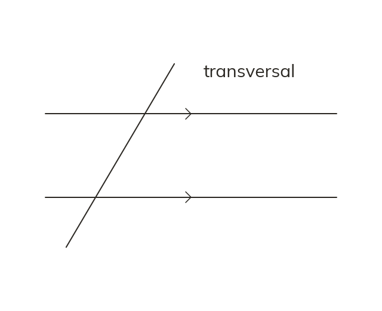

Parallel lines and a transversal
Matching arrowheads mean two lines are parallel. A transversal crosses them both. It makes the same angles at each crossing.
Matching arrowheads say that two lines are parallel, and a transversal is a straight line crossing them. It crosses both at the same slope, so it makes the same angles at each crossing.